Plaza de Armas stone, Rainbow Mountain at seventeen thousand feet, Sacred Valley ATVs and Maras salt pans, Sacsayhuamán above the city, and coca tea until your lungs catch up.
5+Days
~3400mCity altitude
~8Places that stuck
The air is thin. The history is thicker.
Altitude warning (~3400 m / ~11,150 ft): Cusco does not negotiate with sea-level lungs. Expect short breath and a body that wants a nap — spend 1–2 easy days before Vinicunca or long ATV loops. Coca tea helps some people; alcohol on night one rarely does. Incan foundations under Spanish balconies, alpacas in the plaza, Sacred Valley, Maras salt, Sacsayhuamán above town — five days is a first draft once you stop pretending the air is free.
Where I actually walked.
Every tagged stop is on the map. All pins shows them together — tap a name to zoom in. Each popup opens the same place in Google Maps.
The useful layer — altitude first, day-trip bookings, Boleto Turístico notes, and how to move without gasping on every hill.
🏔️ Rainbow Mountain
Vinicunca at ~17,100 ft — mineral stripes, thin air, a 3–4am departure. Coca leaves help. One of Peru’s hardest day hikes and worth every breathless step.
⛰️ Sacred Valley
Lower than Cusco — ruins, markets, salt terraces. Ollantaytambo, Pisac, Maras. Full-day tours or ATVs. Good acclimatization before Rainbow Mountain.
🏛️ Sacsayhuamán
Massive fitted stones above the city. Free with Boleto Turístico. Short walk or taxi from Plaza de Armas. Sunset from the walls is the postcard.
☀️ Qorikancha
The Incan Sun Temple under a Spanish church. Walls once gold. Museum rooms explain astronomy and religion. Must-see near the center.
🧂 Maras salt mines
Incan-era salt pans still worked. Pair with Moray terraces. Half day by van, bike, or ATV from the valley floor.
🏛️ Plaza de Armas
The living room of Cusco — cathedral, arcades, alpacas posing for tips. Start here after you land. Walk slow; the altitude is part of the architecture. Hatun Rumiyoc’s twelve-angled stone is a short stroll away.
🪂 Adventure sports
Zipline cables over the Andes, ATVs through Sacred Valley mud. Book when lungs allow — same operators as the valley day trips, louder chapter.
🏔️ Rainbow Mountain tour
Book a reputable agency. Early vans leave before dawn. Dry season sells out. Confirm oxygen on the bus if you care.
Day tour
🎫 Boleto Turístico
Partial or full ticket covers Sacsayhuamán and several valley sites. Buy at the booth or sites. Check which ruins your days need.
Multi-site pass
🚂 Train to Machu Picchu
PeruRail / Inca Rail from Poroy or Ollantaytambo. Book early in dry season. Station day is its own logistics chapter.
Beef, cheese, or chicken — hot and portable for early vans and train mornings.
S/. 3–8
📅 When to book
Dry season (May–Sep) needs a head start. Shoulder months are kinder. Book Rainbow Mountain and trains early if those are non-negotiable.
📍 Where
Near Plaza de Armas — walkable center, more noise. San Blas — hills, views, quieter nights. Sacred Valley (Ollantaytambo) — lower altitude, train logistics for Machu Picchu.
💵 Spend less
Skip plaza-front premiums if you can walk ten minutes. A solid Airbnb with a kitchen beats a lobby you will Instagram once. Acclimatize before you pay for hard day trips.
☀️ Dry season (May–Sep)
0–20°C — clear skies, cold nights, peak trekking. Book 6+ months for Inca Trail / popular tours. Inti Raymi in June.
🌧️ Wet season (Dec–Mar)
5–18°C — afternoon rain, greener hills, fewer crowds. Inca Trail closed in February. Morning hikes still work.
🌸 Shoulder (Apr, Oct–Nov)
2–20°C — better value, moderate crowds. April can stay wet; Oct–Nov dries out. Easier last-minute bookings.
🫁 Altitude first
~3400 m (~11,150 ft). Spend 2–3 easy days before Rainbow Mountain. Hydrate, go light on alcohol, coca tea is normal. Acetazolamide if your doctor agrees.
🚶 Walk the center
Most historic stops are within ~20 minutes of Plaza de Armas. Cobblestones + altitude = slow shoes. Slippery when wet.
Free
🚕 Taxis / apps
No meters — agree price first. InDriver / Beat help. S/. 5–10 city rides. Avoid unmarked cars at night.
From Poroy or Ollantaytambo to Aguas Calientes. Book seats; station timing matters.
Train ticket
✈️ CUZ airport
Short transfer to the city. Altitude hits on landing — plan a soft first afternoon.
Taxi / transfer
Select your citizenship
Usually a Peruvian visa — or a conditional exemption. Indian ordinary-passport holders typically need a tourist visa unless they qualify for Peru’s exemption (valid US/UK/Canada/Australia/Schengen visa with enough remaining validity, or permanent residence in those places). Always verify with Migraciones Perú / the Peruvian consulate before you fly.
Where are you currently residing?
📅 Tourist visa (if no exemption)
WhatPeruvian tourist visa via a Peruvian consulate (e.g. New Delhi)
StayAuthorized length is set at entry — often up to ~180 days in a year for tourism categories; officer decides
ProcessingOften about 7–10 working days after interview — confirm locally
ApplyStart at least 15 days before travel; earlier is safer
🪪 Conditional visa-free?
Valid visa from USA, UK, Canada, Australia, or Schengen with typically 6+ months remaining at entry
Or permanent residence in those countries/areas
Airlines may interpret Timatic differently — print official guidance
Transit rules can differ from entry rules — check your routing
📄 Typical documents
Passport valid 6+ months
Visa application (DGC-005) if applying
Photos, itinerary, lodging proof
Funds / employment / ties evidence
Return or onward ticket
💡 Pro tips
Confirm with the Embassy of Peru / Migraciones Perú — not a blog comment
Carry printed exemption proof if you rely on a US/Schengen visa
Boarding denial can happen even when entry rules look clear
TAM / Andean migration card processes change — follow current airport instructions
Important: General guidance only. Fees, exemptions, and document lists change. Verify on consulado.pe / Migraciones Perú before you book nonrefundable tickets.
Often visa-free for short tourism if your US visa qualifies. Indian nationals with a valid US visa (commonly needing ~6 months remaining validity at entry) or US permanent residence are frequently exempt from a separate Peruvian tourist visa. H-1B/H-4/OPT holders usually rely on the valid US visa stamp/status — still verify Migraciones Perú and your airline before departure.
✈️ Typical exemption path
VisaOften no Peruvian visa if US (or other listed) visa meets the minimum remaining validity
StayUp to ~180 days/year tourism categories are commonly cited; entry officer decides
StatusKeep H-1B/H-4/OPT (or other) valid for the whole trip and for US re-entry
🪪 Carry anyway
Indian passport
Valid US visa stamp / green card if applicable
I-797 / EAD as relevant
Return ticket to the US
Lodging proof and sufficient funds evidence
📄 If exemption does not apply
Apply for a Peruvian tourist visa at a consulate with jurisdiction over your US state
Do not assume every US visa category qualifies — confirm
Student/short visas are sometimes treated more strictly than travel/business visas
💡 Tips
Screenshot or print the official exemption language for airline desks
US re-entry needs a valid US visa/stamp — Peru does not fix that
Same-day LIM→CUZ is doable but brutal on altitude — an overnight in Lima is kinder
Rules change — Migraciones Perú is the source of truth
Important: Status and exemption questions are individual. When in doubt, check Migraciones Perú / the Peruvian consulate and your airline — not a comment thread.
No visa required for tourism. US citizens can typically visit Peru visa-free for short tourism stays. Authorized length is set at entry.
✈️ Visa-free entry
VisaNone for ordinary tourism (confirm current MFA matrix)
PassportValid; 6 months remaining is a common airline/consular expectation
PurposeTourism, short visits — not work
🛂 Entry checklist
Valid US passport
Return / onward ticket
Proof of accommodation
Sufficient funds for the stay
Follow current TAM / arrival form instructions
💡 Travel tips
Peak May–Sep spikes hotels near Plaza de Armas and trains to Machu Picchu
If you continue to another country, that leg needs its own documents
Altitude is a health question — acclimatize before hard day trips
📍 Local note
You enter Peru at LIM (or another port), then fly to CUZ. Cusco itself is not an international visa checkpoint — your Peruvian admission still governs the stay.
Note: Visa-free still means immigration rules. Check travel.state.gov / Migraciones Perú for the latest stay limits and entry forms.
What stayed on the roll.
Nine chapters from the Andes — Rainbow Mountain, thin-air ridges, alpacas, the plaza, ziplines, Sacred Valley dust, Maras salt, the twelve-angled stone, and the train south.
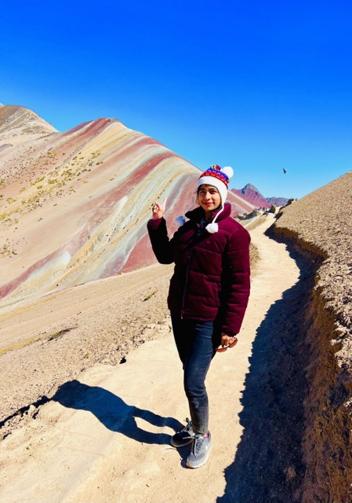
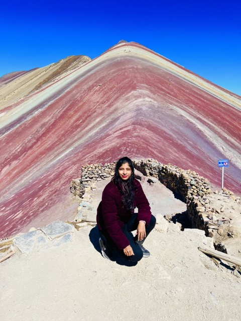
01 / 02
01 / 09
Rainbow Mountain
The trek to Vinicunca at 17,100 feet was one of the hardest and most rewarding days of the trip. Mineral stripes like a painting — and altitude that tests every step.
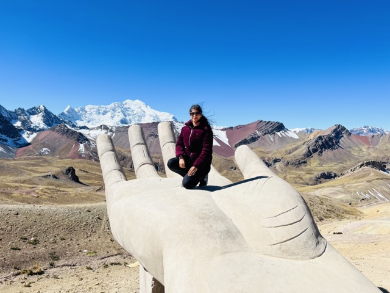
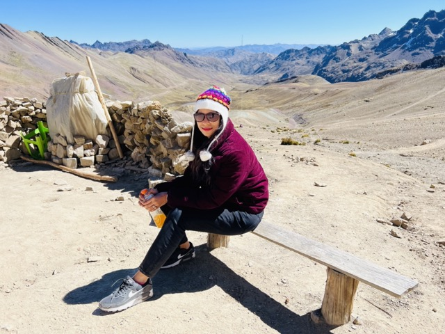
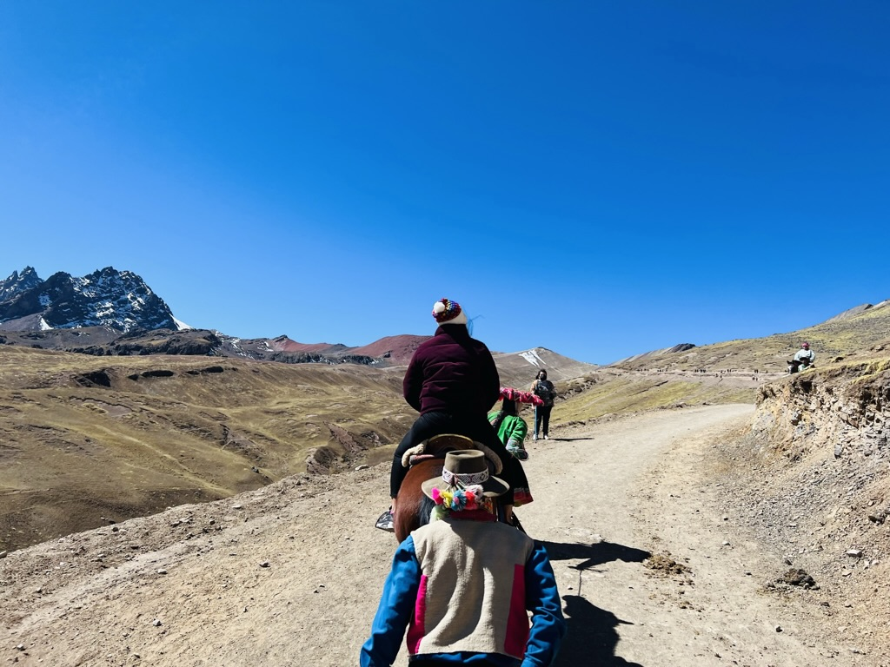
01 / 03
02 / 09
Seventeen thousand feet
Scenic Andes from altitudes that make conversation optional. The hike is not so easy — and that is the point. Coca leaves, slow steps, and a view you earn.
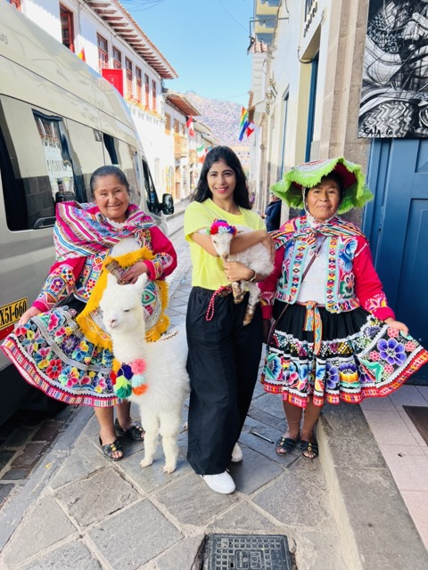
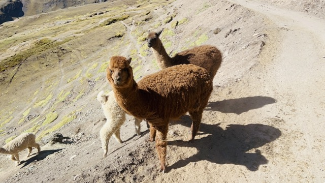
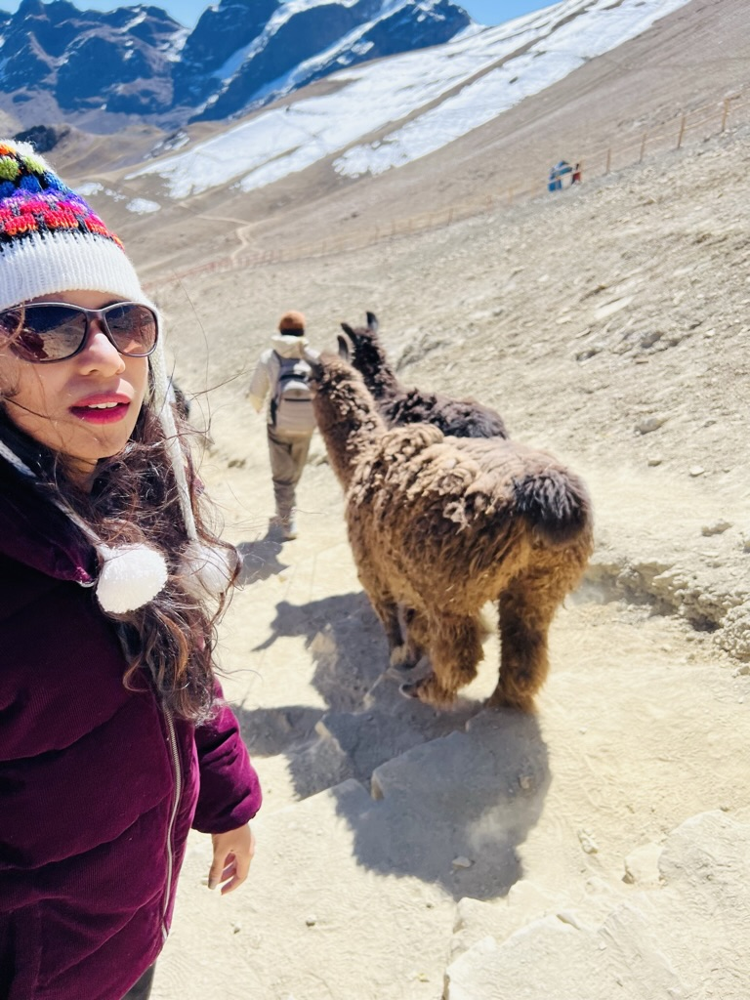
01 / 03
03 / 09
Alpacas on the trail
Locals, soft wool, and a hug on the cobbles. The animals are part of the landscape here — not a zoo stop, a daily fact of the highlands.
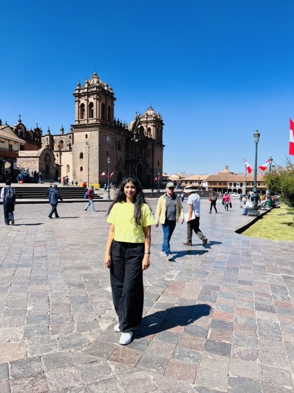
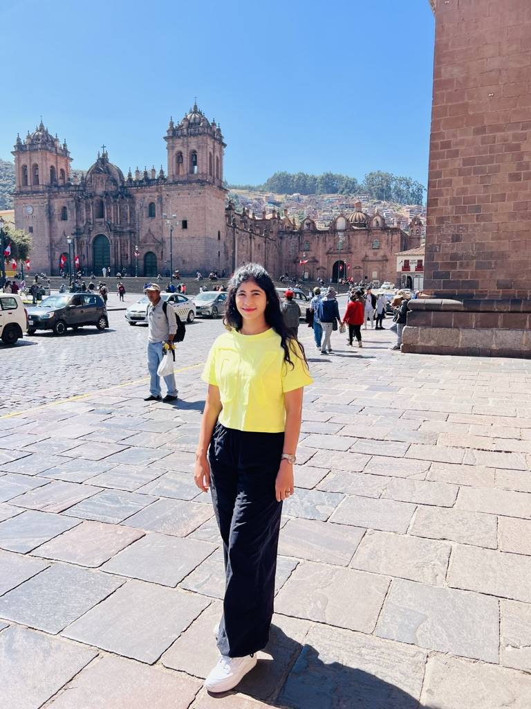
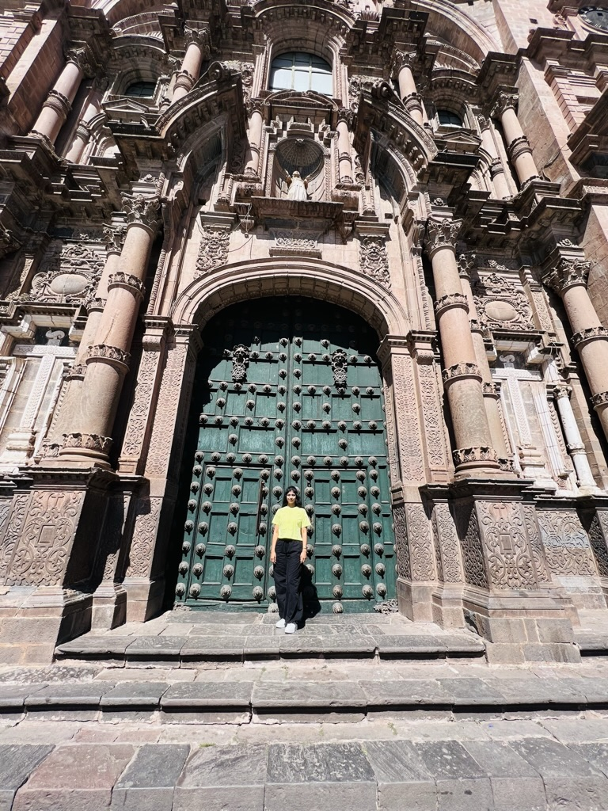
01 / 03
04 / 09
Plaza de Armas
The city square — colonial balconies, cathedral stone, and the pulse of Cusco. Sit once before you chase another ticketed ruin.
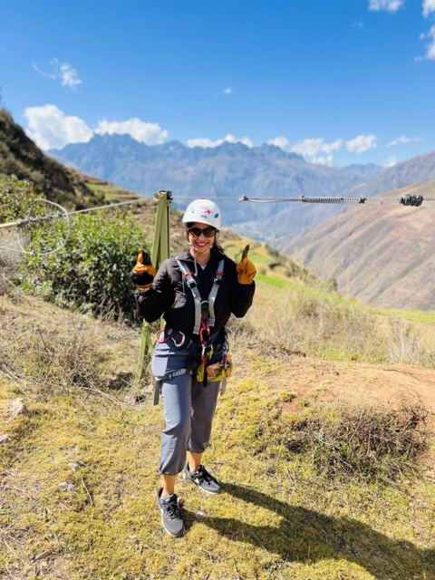
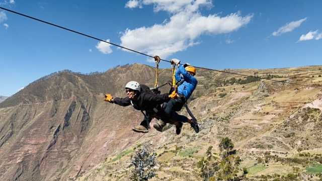
01 / 02
05 / 09
Ziplining the Andes
Harness on, valley below. Not every Cusco day is a ruin — some are cables and wind and a whoop you did not plan to make.
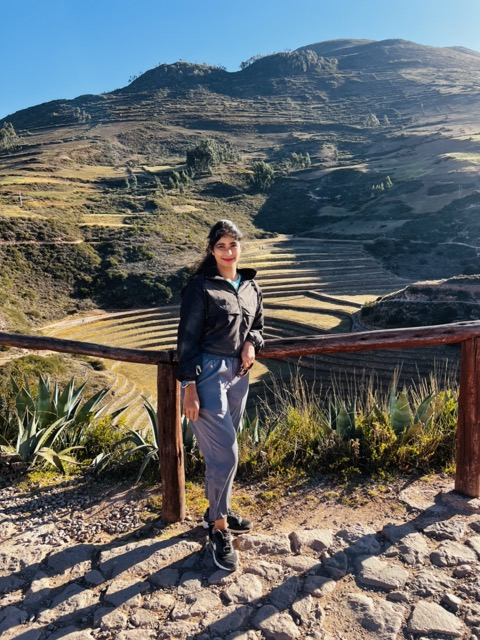
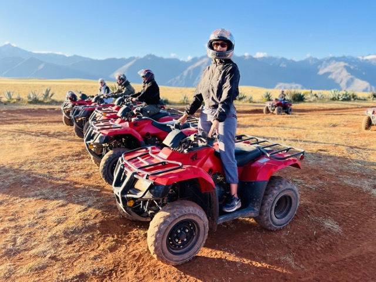
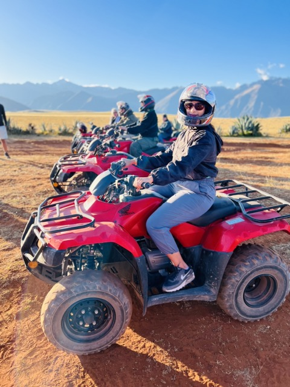
01 / 03
06 / 09
Sacred Valley dust
Lower altitude, wider light. ATVs through the valley floor — ruins and ridgelines without the city crush. This is where Cusco exhales.
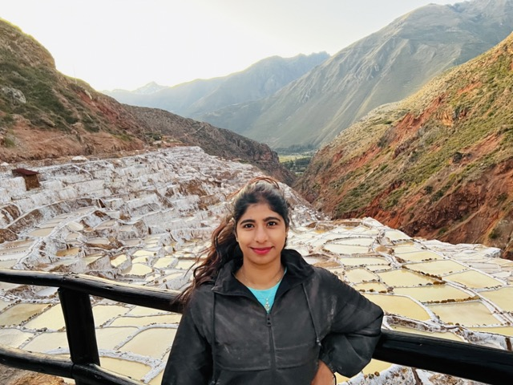
01 / 01
07 / 09
Maras salt pans
Terraces of white still worked since Incan times. Pair with Moray. Half a day that looks like a different planet.
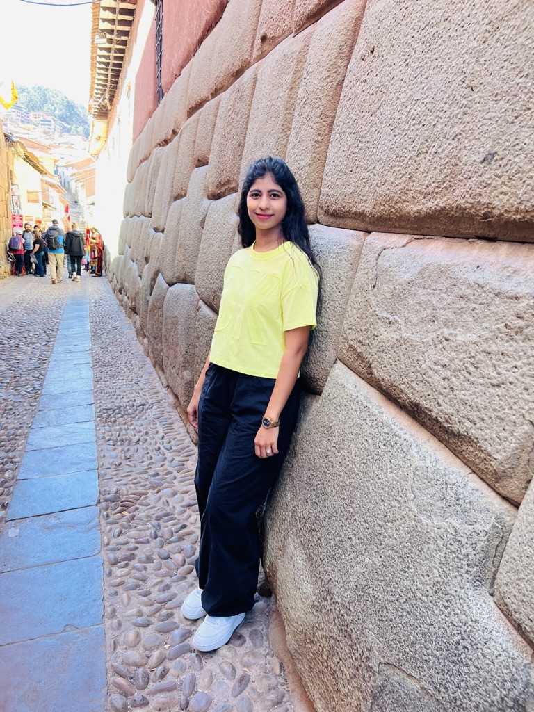
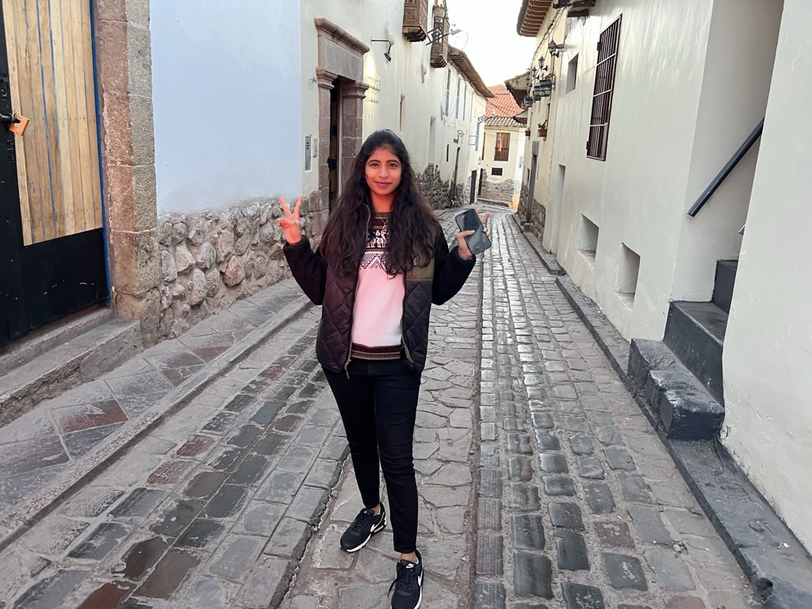
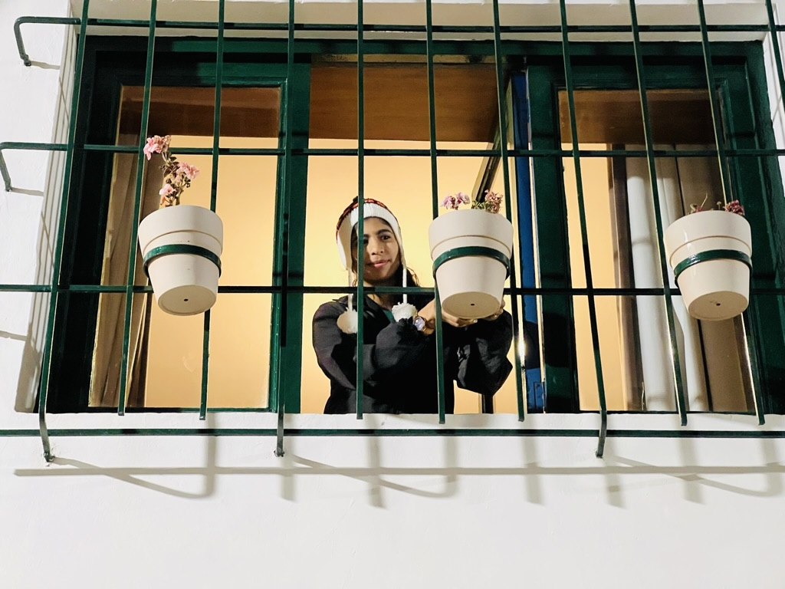
01 / 03
08 / 09
Stone that still fits
The twelve-angled stone and narrow lanes — Incan precision under colonial paint. Walk Hatun Rumiyoc once without rushing the photo.
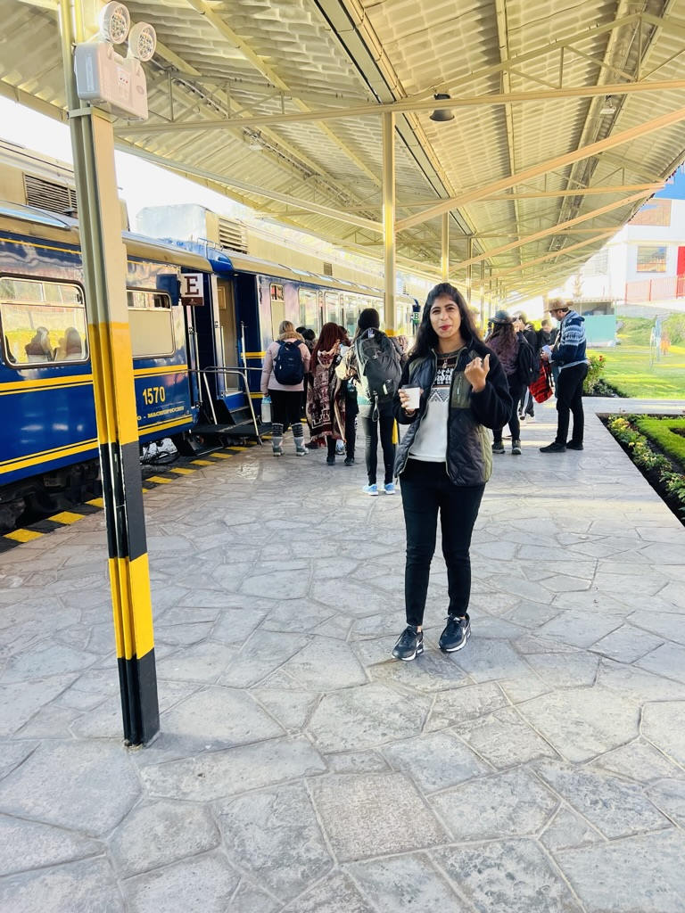
01 / 01
09 / 09
Train day
Railway station logistics — bags, tickets, the start of the Machu Picchu chapter. Cusco hands you off to the rails.
Still on the list.
Five-plus days filled Rainbow Mountain and the valley. These are the rooms I still owe Cusco.
🏛️ Qorikancha, slower
I skimmed the Sun Temple. The museum rooms deserve a morning without a tour-van clock.
Half day
🌅 Sacsayhuamán at sunset
I saw the stones in hard light. Golden hour on the walls is still owed.
Evening
🥾 Inca Trail
I took the train. The four-day trek is unfinished business — permits, pack, and months of booking.
4 days
🛍️ Pisac market morning
I passed through the valley. A slower Pisac market day without ATV dust would be kinder.
Morning
🎭 Inti Raymi
June’s festival fills the city. I was not there for the sun festival. Next dry season, maybe.
June
If you have another day.
Rainbow Mountain if you acclimatized. Sacred Valley if you need lower air. Maras + Moray if you want salt and circles without a full valley loop.
🏔️ Rainbow Mountain
Pre-dawn van, high hike, mineral stripes. Only after 2–3 soft days in Cusco.
Day · tour van
⛰️ Sacred Valley loop
Pisac, Ollantaytambo, markets, lunch. Lower altitude practice before harder climbs.
Day · tour
🧂 Maras + Moray
Salt pans and circular terraces. Half day or ATV afternoon.
Half day
🚂 Machu Picchu next
Train from Poroy or Ollantaytambo. Tickets and circuits sell out — book before you romanticize the mist.